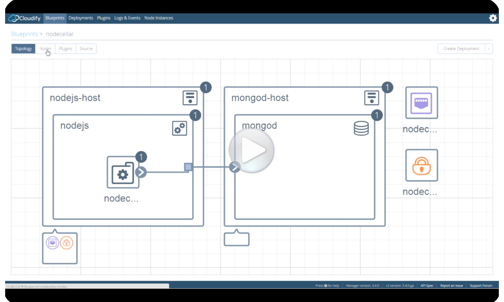

						<section class="content">
				<div class="container">
				<div class="row">
				<div class="span9">
					<h1>Cloudify for VMware <strong>NFV and Hybrid Cloud</strong></h1>

					<h2>Cloudify Telco Edition<sup>&trade;</sup> + VMware vCloud NFV<sup>&trade;</sup> for NFV and Operator Services</h2>
					
					<p>Network Function Virtualization is an initiative driven by Telco Carriers to transform their existing appliance-based infrastructure into a cloud-based infrastructure.  With the increasing demands to reduce operational costs while speeding up the time to market, Telcos require a solution that allows them to stand up an NFV Cloud where they can deploy, orchestrate and maintain their virtualized network workloads with the speed and stability that the industry demands.</p>

					<hr>
					<span class="pullquote-left">
  					<font style="font-weight: bold" size="5" face="Baskerville Old Face"><em>Read all about the VMware/Cloudify Collaboration</em></font>&nbsp; <a class="btn btn-large btn-theme btn-rounded" id="downloadBtnInner" href="/2016/10/19/vmware-and-cloudify-collaboration-redux.html" target="_blank"><i class="icon-plus"></i> read now &nbsp;&nbsp;&nbsp;</a></span>
					<hr>

					<p>Combining <strong>Cloudify Telco Edition<sup>&trade;</sup></strong> Orchestration and VNF Management with the industry’s best of breed NFVI platform in <strong>VMware vCloud NFV<sup>&trade;</sup></strong> is the answer the modern Telco is looking for.  Leveraging the powerful MANO and VNFM capabilities of <strong>Cloudify Telco Edition<sup>&trade;</sup></strong> in concert with the robust virtualization management offered by <strong>VMware vCloud NFV<sup>&trade;</sup></strong> Operator Service Providers can offer agile and stable solutions to their customers with ease.</p>
					
					<!--<br/>
						
						<div class="aligncenter"><a class="btn btn-theme btn-large btn-rounded" id="downloadBtnInner" href="{{ site.baseurl }}/downloads/get_cloudify.html"><i class="icon-download"></i>  Download Now</a></div>
					<br/>-->
						
					<p>Key features of the integrated platform include:</p>
					<ul>
						<li>TOSCA blueprinting for VNFs and full service chains</li>
						<li>Service Catalog</li>
						<li>Multi-VIM support from the same orchestration engine for both vCloud Director<sup>&trade;</sup> and VMware Integrated Openstack<sup>&trade;</sup> deployments.</li>
						<li>Integrated operational alerts and capacity planning with <strong>vRealize Operations Manager<sup>&trade;</sup></strong> and <strong>vRealize Log Insights<sup>&trade;</sup></strong></li>
						<li>Tight integration with <strong>NSX<sup>&trade;</sup></strong> for full Software Defined Networking solutions</li>
						<li>ETSI compliant architecture</li>
					</ul>

					<p class="aligncenter"></p>


					<br/>
<hr>

<span class="pullquote-left">
  <font style="font-weight: bold" size="5" face="Baskerville Old Face"><em>Try VMware's vCloud NFV Lab on end-to-end lifecycle management & orchestration</em></font>&nbsp; <a class="btn btn-large btn-theme btn-rounded" id="downloadBtnInner" href="http://labs.hol.vmware.com/HOL/catalogs/lab/2747" target="_blank"><i class="icon-plus"></i> Go &nbsp;&nbsp;&nbsp;</a></span>

<hr>

<section id="content">
				<div class="container">
				<div class="row">
				<div class="span9 no-margin">
					<h2>Cloudify Telco Edition<sup>&trade;</sup> + VMware vRealize Automation<sup>&trade;</sup> for Converged IT and Operator Services</h2>

					<p>Telcos today are moving toward a “One Cloud” strategy where traditional IT workloads like OSS and BSS share the same cloud infrastructure with Operator Services for workloads but face the challenge of being able orchestrate, manage and automate those functions.   Combining this solution with the one above on a common hardware platform enables the modern Operator Services Provider the flexibility and cost savings of a standardized architecture while still providing the stable and robust services their customers demand while supporting the internal IT workloads.</p>

					<p>Combining <strong>Cloudify<sup>&trade;</sup></strong> with <strong>VMware vRealize Automation<sup>&trade;</sup></strong> and <strong>vRealize Suite<sup>&trade;</sup></strong> provides the well known interface of the service catalog offered by vRealize while harnessing the modeling power of Cloudify.  Tight integrations with vRealize Operations Manager™ and Log Insights™ grant the operator that single pane of glass view into how the cloud is operating, and where the issues lie before they become a problem.</p>

					<p>Key features of the integrated platform include:</p>
					
					<ul>
						<li>Easy to use Service builder</li>
						<li>Chargeback/Showback</li>
						<li>Integrated operational alerts and capacity planning with <strong>vRealize Operations Manager<sup>&trade;</sup></strong> and <strong>vRealize Log Insights<sup>&trade;</sup></strong></li>
						<li>Tight integration with <strong>NSX<sup>&trade;</sup></strong> for full Software Defined Networking solutions</li>
						<li>Auto scale in/scale out of workloads with prioritization to make the most efficient use of hardware infrastructure</li>
					</ul>

					<p class="aligncenter"></p>
				</div>
				</div>
				</div>
					</section>

				<hr>
<section>
	<h2>Hybrid Cloud Support for VMware</h2>
	
	<p>The support for all three VMware environments provides VMware users with a common management and automation framework. This makes it possible to easily build a VMware hybrid cloud with vCloudAir as the public cloud, and vSphere/vCenter or even OpenStack as private cloud. See the below video for a demo.</p>

<hr>

<span class="pullquote-left">
  <font style="font-weight: bold" size="5" face="Baskerville Old Face"><em>Get Cloudify for VMware management and orchestration today!</em></font>&nbsp; <a class="btn btn-large btn-theme btn-rounded" id="downloadBtnInner" href="/downloads/get_cloudify.html"><i class="icon-plus"></i> download &nbsp;&nbsp;&nbsp;</a></span>

<hr>

	<p>Cloudify supports a range of application packaging and configuration management starting from a simple script based packages to Chef, Puppet, SaltStack and now also Docker. This allows VMware users to leverage their existing investment in any of those frameworks and include Cloudify as a complementary platform to their existing environment.</p><br>

	<a class="hover-wrap fancybox fancybox.iframe" data-fancybox-group="gallery" title="Hybrid Cloud Deployment of Nodejs and MongoDB on OpenStack and VMware vSphere" href="https://www.youtube.com/embed/J-4jGJcqdLY?enablejsapi=1&amp;wmode=opaque">
	</a>
<hr>
	<div class="row">
					<div class="span6">
					<h3><b>Key Solution Benefits</b></h3>

					<ul>
					  <li>TOSCA-based orchestration for VMware hybrid deployments </li>

					  <li>Topology-driven management and monitoring of an application throughout its lifecycle </li>

					  <li>Integration with any tool chain </li>
					</ul>

					<p><b></b></p>

					<h3><b>Cloudify’s Secret Sauce</b></h3>

					<p>Cloudify is the only pure-play orchestration framework uniquely positioned to fit into heterogeneous enterprise and Telecom environments, and also includes:</p>

					<ul>
					  <li>Support for any application stack, with native OpenStack support </li>

					  <li>Support for containerized and non-containerized workloads </li>

					  <li>Deployment modeling using standard TOSCA blueprints </li>

					  <li>Support for comprehensive monitoring </li>

					  <li>Built in auto-healing and auto-scaling policies for deployed applications </li>

					  <li>Support for DevOps related tool chains. </li>
					</ul>
					</div>
					<div class="span3">

					<div class="well">
						
					<h3><b>Use Cases</b></h3>

					<p>Cloudify wears many hats, serving as an orchestration framework for</p>

					<ul>
					  <li>Cloud Orchestration </li>

					  <li>SaaS Enablement </li>

					  <li>Network Functions Virtualization (NFV) </li>

					  <li>Private PaaS </li>

					  <li>Disaster Recovery </li>

					  <li>Big Data Management </li>

					  <li>Marketplace Framework </li>
					</ul>

					</div>

				</div>
				</div>
</section>
<hr>
<a name="vmwareform"></a>
	<br><br><br>
<h3>Fill in the form below if you prefer to get notified when the NFV products are made available</h3>
<!--[if lte IE 8]>
<script charset="utf-8" type="text/javascript" src="//js.hsforms.net/forms/v2-legacy.js"></script>
<![endif]-->
<script charset="utf-8" type="text/javascript" src="//js.hsforms.net/forms/v2.js"></script>
<script>
  hbspt.forms.create({ 
    portalId: '1918719',
    formId: 'f892189d-9bf3-4a84-9efe-862beff3e1d6'
  });
</script>

{% include download-mixpanel-manager.html %}